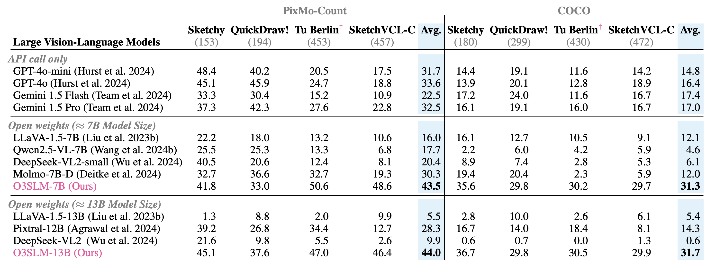

Abstract
While Large Vision Language Models (LVLMs) are increasingly deployed in real-world applications, their ability to interpret abstract visual inputs remains limited. Specifically, they struggle to comprehend hand-drawn sketches, a modality that offers an intuitive means of expressing concepts that are difficult to describe textually.
We identify the primary bottleneck as the absence of a large-scale dataset that jointly models sketches, photorealistic images, and corresponding natural language instructions. To address this, we present two key contributions:
(1) a new, large-scale dataset of image-sketch-instruction triplets designed to facilitate both pretraining and instruction tuning
(2) \({\texttt{O3SLM}}\), an LVLM trained on this dataset. Comprehensive evaluations on multiple sketch-based tasks: (a) object localization, (b) counting, (c) image retrieval \(\textit{i.e.}\) (SBIR and fine-grained SBIR), and (d) visual question answering (VQA); while incorporating the three existing sketch datasets, namely QuickDraw!, Sketchy, and Tu Berlin, along with our generated \(\texttt{SketchVCL}\) dataset, show that \(\texttt{O3SLM}\) achieves state-of-the-art performance, substantially outperforming existing LVLMs in sketch comprehension and reasoning.
Method
\(\texttt{SketchVCL}\) Dataset
▷ Automated Large-Scale Sketch Generation Pipeline. For each object instance, we use theSAM2-generated segmentation maps to mask the background and
pass the foreground throughPix2Pixfor sketch generation. These sketches are enhanced using edge
detection using morphological gradients. The final sketch is an aggregation of the edges and the Pix2Pix sketch.

▷ Training Data Composition. The distribution of data for each task and corresponding datasets is shown. The total pretraining size is 600k,
while the total finetuning size is 215k. Instruction tuning data is curated based on the downstream tasks. Detailed instruction formatting prompts for each task are provided in the supplementary.
▷ See sketch samples from SketchVCL dataset, generated using our proposed sketch-generation pipeline.
Results

▷ Evaluation on Sketch-Based Counting. We evaluate performance on images fromCOCOandPixMo-Countdatasets. COCO presents a more challenging setting, with a greater number of object categories per image, forcing
the model to rely more on the sketches as a query. We sample sketches from four datasets representing various levels of abstraction and difficulty of hand-drawn sketches, for example QuickDraw! is known to have highly abstract and often incomplete
sketches.
† indicates sketch datasets which are unseen by our model during training, they assess our model’s ability to generalize to sketch styles.
▷ Sketch-Based Object Detection. To evaluate the sketch-based object detection on imagesCOCO val2017and sketches from four different datasets, specifically:Sketchy,QuickDraw!,TU-Berlin, andSketchVCL-C. We evaluate on TUBerlin and Sketchy datasets.†indicates sketch datasets which are unseen by our model during training, they assess our model’s
ability to generalize to sketch styles.
▷ Skecth-based Image Retrieval (SBIR) performance on Sketchy. The substantial gains indicate that although original LLaVA has very limited sketch understanding, our training data and methodology align sketches and text in O3SLM.
▷ Qualitative Results for SBIR.
BibTeX
@InProceedings{gupta_2026_AAAI,
author = {Gupta, Rishi and Karuppasamy, Mukilan and Marjit, Shyam and Tripathi, Aditay and Chakraborty, Anirban},
title = {O3SLM: Open Weight, Open Data, and Open Vocabulary Sketch-Language Model},
booktitle = {Proceedings of the AAAI Conference on Artificial Intelligence},
year = {2026},
}